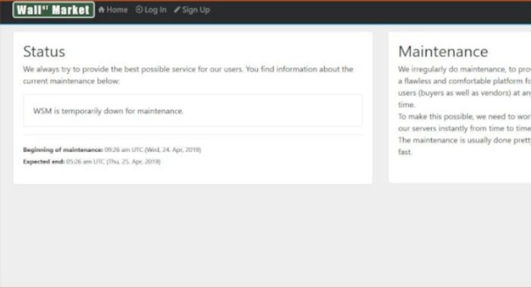
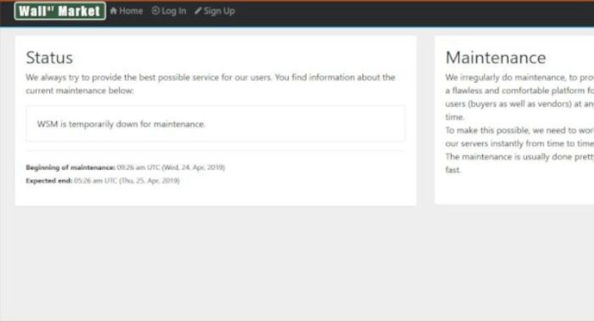

German Police Seized Nine Telegram-Based Drug Markets
The Federal Criminal Police Office (BKA), the General Public Prosecutor’s Office in Frankfurt am Main and Central Office for Combating Internet Crime (ZIT), and other law enforcement agencies seized Telegram groups used as illicit marketplaces, according to a recent announcement from German authorities. The groups were “alternatives to the darknet,” according to the BKA. Authorities called them the largest telegram drug groups in germany.
The investigation into the Telegram groups began in June 2020 and involved the public prosecutor’s offices in Bremen, Chemnitz, Essen, Hagen, Konstanz, and Mannheim. The BKA led the investigation.

During the investigation, law enforcement identified 28 suspected drug dealers and fraudsters. On October 29, 2020, law enforcement agencies across the country conducted simultaneous raids at 30 properties associated with the suspects. The searches resulted in the seizure of more than four kilograms of narcotics, eight weapons, 8,000 euros, hard drives, and cellphones. Of the 28 people identified by investigators, 13 allegedly participated in illicit drug trafficking. As of October 31, the authorities arrested only two suspects: a 25-year-old and a 19-year-old from the Offenbach District.
In addition to the physical items seized during the property searches, the BKA also seized nine Telegram groups. According to the press release, the 28 suspects of the investigation used the groups to traffic “drugs, forged documents, stolen information, and other illicit goods and services.”

Some of the seized Telegram groups are listed below:
Silk Road; Marktplatz//Schwarzmarkt; GermanRefundCrew; Cracked Accounts Shop
The groups had a combined total of roughly 8,000 users. The BKA posted a seizure banner in the group and prevented the trading bots from functioning in the future.
Images released by the BKA show drugs seized during the operation
The investigation into the Telegram groups began in June 2020 and involved the public prosecutor’s offices in Bremen, Chemnitz, Essen, Hagen, Konstanz, and Mannheim. The BKA led the investigation.

Knives and drugs seized by the BKA
During the investigation, law enforcement identified 28 suspected drug dealers and fraudsters. On October 29, 2020, law enforcement agencies across the country conducted simultaneous raids at 30 properties associated with the suspects. The searches resulted in the seizure of more than four kilograms of narcotics, eight weapons, 8,000 euros, hard drives, and cellphones. Of the 28 people identified by investigators, 13 allegedly participated in illicit drug trafficking. As of October 31, the authorities arrested only two suspects: a 25-year-old and a 19-year-old from the Offenbach District.
A Glock, cellphones, and a laptop were among the items seized by the BKA
In addition to the physical items seized during the property searches, the BKA also seized nine Telegram groups. According to the press release, the 28 suspects of the investigation used the groups to traffic “drugs, forged documents, stolen information, and other illicit goods and services.”
The BKA uploaded a seizure banner to all nine of the Telegram groups
Some of the seized Telegram groups are listed below:
The groups had a combined total of roughly 8,000 users. The BKA posted a seizure banner in the group and prevented the trading bots from functioning in the future.